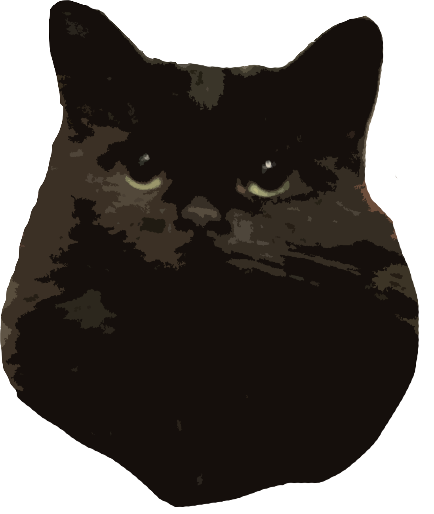
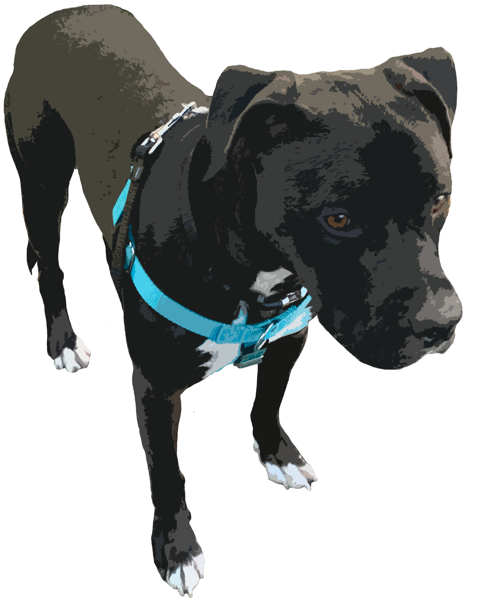

CS Student | Game Dev | Graphic Design | Entreprenuer
Hi! I'm Kelly :)
I am a senior Computer Science student at Wayne State University. I have a cat, Luna, and a pitbull, Luke!
When I graduate, I want to work in Game, Software, Web, or UI/UX Development since I am on the more creative side of Computer Science!
In 2018, I started a business called Killa Creations, where I design, produce, and sell merch.


Game Dev
Since I became a CS major, it has been a goal of mine to release a video game. I am currently learning Unity and plan to move on to Unreal to make this dream a reality.
Graphic Design
I have been designing since high school and have been running and creating content for the social
media pages for the organizations I am in leadership in! I also make graphics for friends who ask for help!
Entreprenuer
In 2018, I started a company called Killa Creations. I design and produce merch for my online shop and have collaborared with others to sell in their shop or on tour!